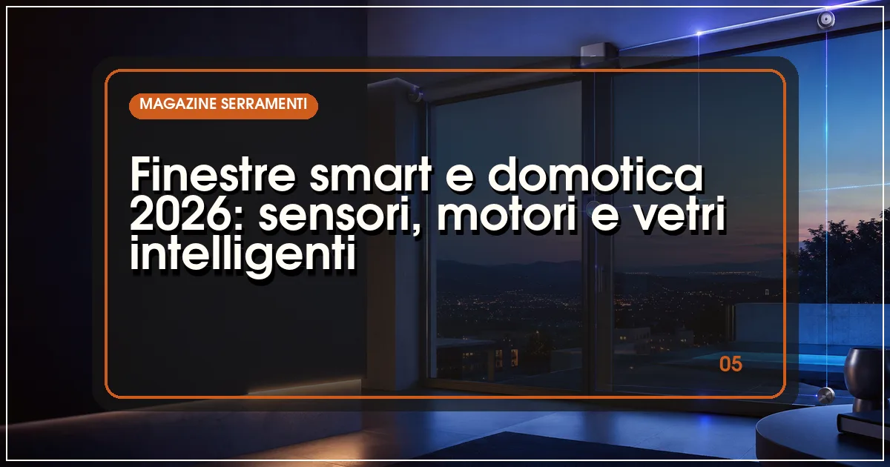
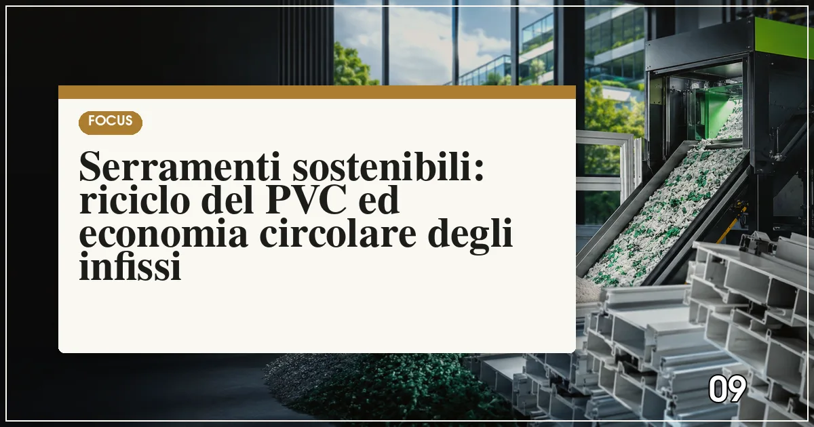
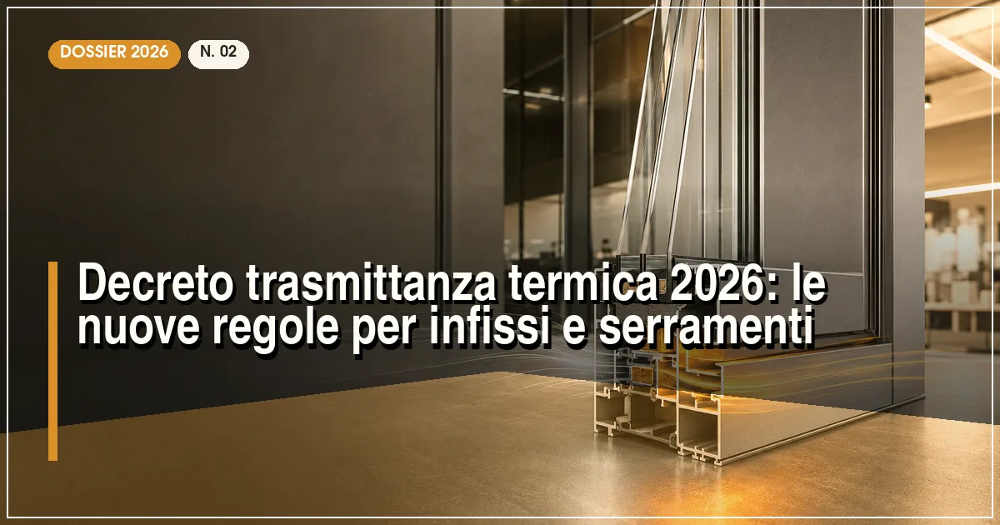
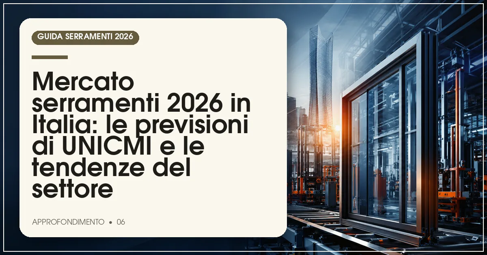

Panorama Infissi: sopralluogo, fornitura, posa e assistenza
Panorama Infissi a Paderno Dugnano: sopralluogo, fornitura, posa e assistenza per finestre e porte. Scopri showroom e contatti.
Attualità, tendenze e innovazione dal mondo dei serramenti e dell'edilizia: design, domotica, sostenibilità e tutto quello che cambia nel settore, spiegato in parole chiare.

Panorama Infissi a Paderno Dugnano: sopralluogo, fornitura, posa e assistenza per finestre e porte. Scopri showroom e contatti.

Ser-Style vende e installa finestre, porte e oscuranti. Esposizione a Olgiate Molgora, consulenza, rilievi e assistenza per la casa.

Dal nero opaco al legno naturale: come cambia l'estetica del serramento.

Dal nero opaco al legno naturale: come cambia l'estetica del serramento.

Dal nero opaco al legno naturale: come cambia l'estetica del serramento.

Dal nero opaco al legno naturale: come cambia l'estetica del serramento.

Dal nero opaco al legno naturale: come cambia l'estetica del serramento.

Il serramento diventa intelligente: cosa è già realtà e cosa arriverà.

Cosa succede alle vecchie finestre e perché il PVC riciclato è una risorsa, non un rifiuto.

Massimali, trasmittanze limite, bonifico parlante e pratica ENEA: tutto per non perdere la detrazione.

Cosa cambia per i valori limite di trasmittanza e per l'accesso alle detrazioni fiscali.

Tra recupero edilizio e riqualificazione energetica: dove va il mercato italiano.

Qualità, innovazione, assistenza e prezzo: il podio dei brand che contano davvero.

Internorm, Finstral, Oknoplast, Veka e Schüco a confronto: trasmittanza, profili, vetri e garanzie.

La direttiva europea sull'efficienza energetica degli edifici spiegata in parole semplici.

Scheda d’ordine serramenti: dal rilievo alla conferma prima della produzione
Una scheda d’ordine per serramenti: identificativi dei vani, versioni, configurazioni e conferme tra rilievo e produzione. Checklist operativa.
Consegna dei serramenti: organizzare documenti, identificativi e riscontri
Prepara la ricezione dei serramenti con elenco vani, riferimenti d’ordine, documenti e osservazioni. Una scheda da coordinare con i referenti.
Finestre di design: come scegliere
Finestre di design: confronta profili, grandi vetrate, finiture e funzioni integrate con disegni, campioni e una scheda di scelta pratica.
Prima di confrontare le offerte, raccogli i riferimenti delle aperture, le esigenze degli ambienti e i documenti delle configurazioni proposte. La guida aiuta a distinguere preferenze, prestazioni dichiarate e aspetti ancora da verificare.
Maniglie delle finestre e accessori: la scheda da confermare prima dell’ordine
Modello, funzione, finitura e compatibilità: prepara una scheda per scegliere maniglie e accessori delle finestre e confermarli prima della produzione.
Le guide e i confronti pubblicati, organizzati per tema. Scegli il percorso che completa le informazioni che stai raccogliendo.